01
Plot Area
Hectares under the BSNR network
EUDR Approved—ha
Hectares covered—ha
Achieve end-to-end visibility, ensure product integrity, and comply with EUDR effortlessly.
Seamless registration to obtaining an EUDR Compliance certificate involving just 5 steps.
Register your Dealers, Processors, Farmers group to get trained on the compliance process.
Work with farmers to enhance their sustainable farming practises and enhance the economic value of sustainable rubber.
The Bharat Rubber Board has launched a groundbreaking initiative to revolutionise rubber supply chains in India. Through the use of new technology, training, and systems, this solution aims to establish a transparent and traceable rubber supply chain across India, ensuring that rubber and rubber products can be traced back to their origin.
Figures update directly from the BSNR portal — stakeholders onboarded and those already EUDR approved.
Hectares under the BSNR network
Farmer / Estate
Rubber product makers
Supplying EU member countries
EUDR is a regulation implemented by the European Union to address the issue of deforestation and forest degradation caused by agricultural commodity production. It is a significant step forward in the fight against deforestation, and is expected to have a major impact on the global supply chains of agricultural commodities.
EUDR FAQ'sTo identify and assess the risk of deforestation and forest degradation associated with an exporter's supply chain.
Learn moreTo evaluate the legal and regulatory risks associated with the exporter's supply chain, including compliance with local laws and regulations.
Learn moreTo ensure that products can be traced back to their source of origin and that complete segregation has been maintained till the export of rubber products.
Learn moreHow the BSNR rollout is planned, from mapping the plantations to certifying the supply chain.
The first phase of mapping will be done in these areas. Dealers, processors, and exporters in these jurisdictions are requested to register their interest immediately to ensure timely availability of the data.
Training modules for registered users will be available from August 2025, designed for exporters, dealers, and processors as per EUDR requirements. The Rubber Board shall also conduct live training at the mapping areas for all stakeholders, and arrange online webinars from time to time.
The initial registration portal to register the interest is available live now. The final release of the certification portal will be enabled from August 2025.
Details of the next phases will be announced here as the rollout progresses.
Choose your role in the rubber value chain to see if BSNR is right for you.
 Pricing Plans for every stakeholder
Pricing Plans for every stakeholder
Talk to the BSNR team about onboarding your supply chain onto the portal.
One shared system for farmers, dealers, processors, manufacturers and exporters, at zero cost to farmers.
Read our story
EUDR placed a compliance cost on the whole rubber value chain, hardest on smallholders.
I have always farmed legally in a non-deforested area. The BSNR initiative has come as a relief, giving us the confidence that even a smallholder farmer like me can meet the global requirements.
The Rubber Board of India, with TRST01, launched BSNR to carry that burden together.
Rather than let the cost of EUDR fall on individual farmers and small businesses, the Rubber Board of India and TRST01 built one coordinated national platform for the industry.
A single standard instead of fragmented, company-led compliance, data held centrally under the Rubber Board with identities protected by unique BSNR IDs, and a platform designed for first-time digital users.
Learn how BSNR worksThe Ministry of Commerce and Industry, Government of India, designated the Rubber Board as the nodal agency for EUDR compliance for rubber, making BSNR the country's official, nation-level answer to the regulation.

BSNR is developed and operated by the Rubber Board of India with TRST01 as its technology and implementation partner, from field data collection and satellite verification to the digital infrastructure behind every Due Diligence Statement.
Founded in 2019 in Hyderabad, with a presence in Singapore, Australia and the United States, TRST01 builds supply chain transparency, ESG and compliance technology under one principle: "Trust through Technology".
Countries where TRST01 operates
Corporate and government adoptions
Land brought under traceability
Farmers onboarded worldwide, BSNR among them
Sustainability Impact Award 2024 · Forbes India D-Globalist Select200 · Aegis Graham Bell Award 2025
BSNR, Bharat Sustainable Natural Rubber, is India's national digital platform for EUDR compliance and sustainability certification in the natural rubber sector, connecting farmers, dealers, processors, manufacturers and exporters on one shared system.
BSNR is a partnership between the Rubber Board of India and TRST01, which serves as the programme's technology and implementation partner, covering field data collection, satellite verification and digital compliance filing.
No. Registration, plot mapping, risk assessment and documentation are free for every farmer on the platform.
Every plot record passes through independent field validation and satellite-based deforestation analysis against the EUDR's 31 December 2020 baseline before it is used in any shipment's compliance documentation.
Trained field agents visit farmers directly to complete registration, consent and plot boundary mapping. The process works fully offline in areas without connectivity and does not require the farmer to install anything.
BSNR is being rolled out across India's rubber-growing states, with mapping and onboarding conducted in phases starting with the major rubber-producing regions of Kerala before expanding nationally.
TRST01 is a global EUDR compliance software and services provider, used by more than 200 businesses and governments across more than 10 countries to manage supply chain traceability, deforestation risk assessment and regulatory reporting.
TRST01 offers TRST01Chain for exporters and processors, TRST01Chain MeeS for manufacturers, and the TRST01Chain EUDR Hub for EU importers, covering plot mapping, vendor compliance and Due Diligence Statement filing across the supply chain.
How BSNR checks every rubber plot against the EUDR deforestation rules, from mapping in the field to satellite analysis. Scroll through the five questions below.
Rubber grown on land deforested after the cut-off date cannot be sold into the EU, and every shipment needs proof of where it was grown.
Required: geo-coordinates, a Due Diligence Statement, risk assessment (Art. 10) and risk mitigation (Art. 11).
The Rubber Board is rolling out 100% polygon mapping of rubber farms in three phases, carried out by trained field agents.
Rubber from land deforested after December 2020 is non-compliant and cannot be exported to the EU. It can still be sold for local Bharat consumption.
Every stakeholder has a part to play. Pick your role:
Every mapped plot is checked against satellite imagery and protected forest cover from the 31 December 2020 baseline before it can be used in any shipment.
If a problem is found
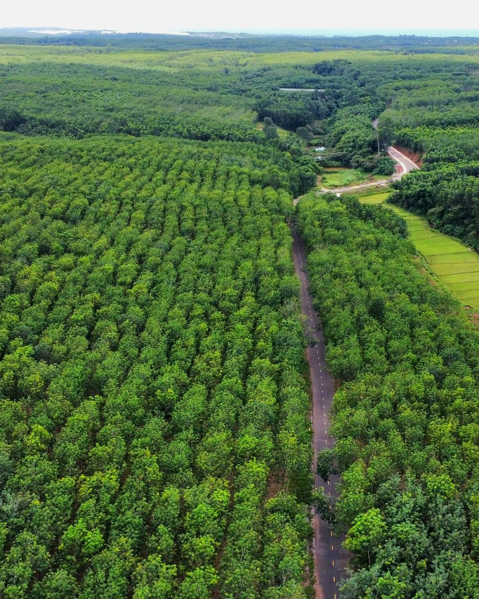
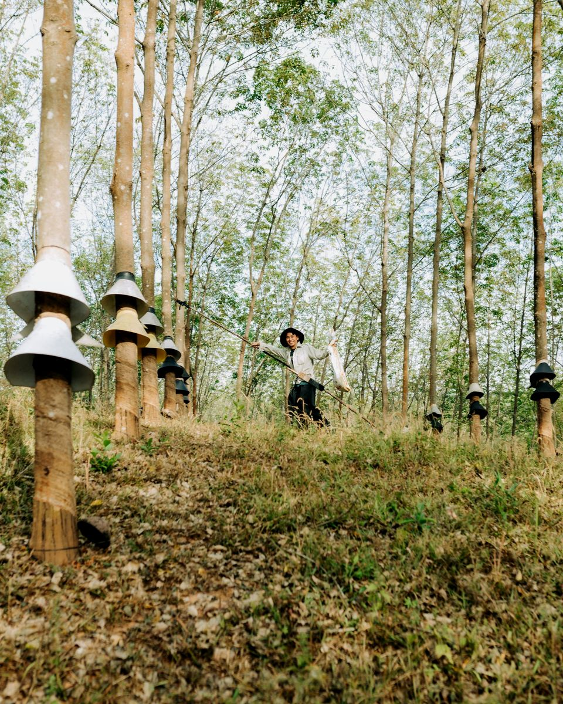
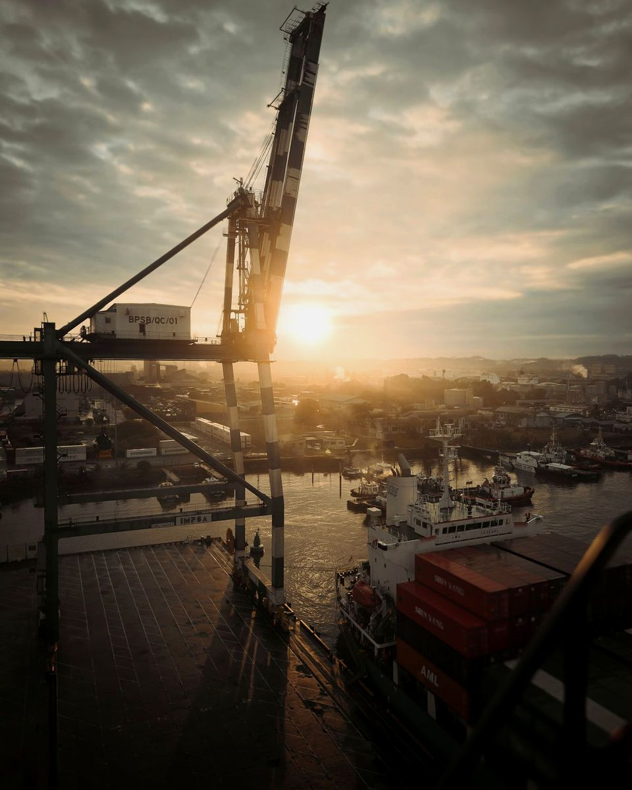
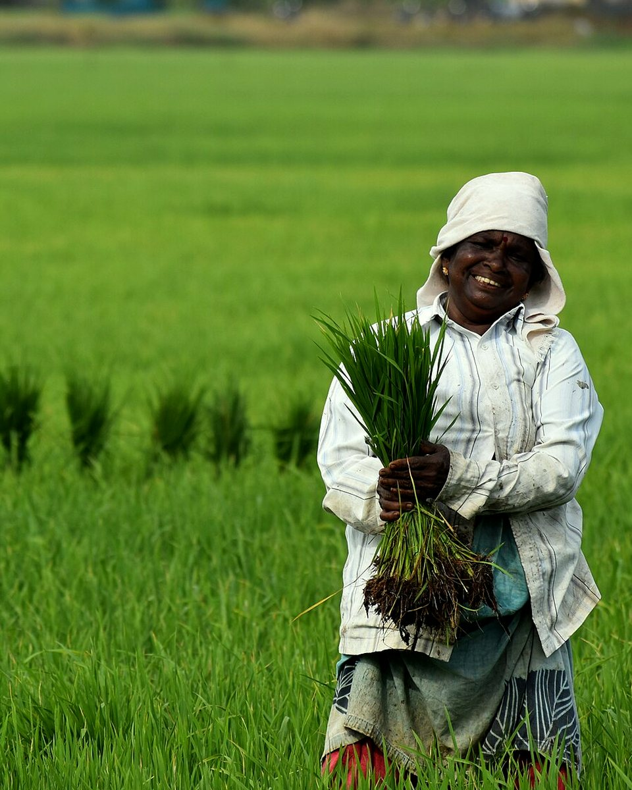
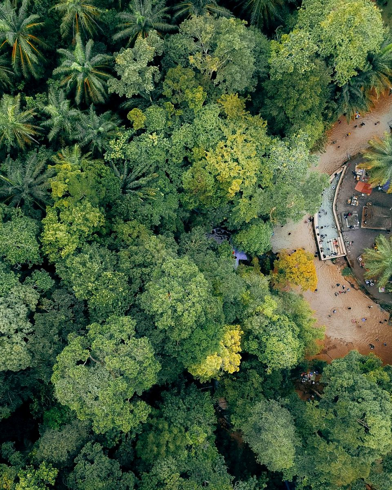
Register your interest and a trained field agent will help you map your plots for EUDR compliance.
Risk Assessment is an integral part of EUDR Compliance (Article 10). Though there are no specific requirements in EUDR towards the Risk Assessment, our system is designed to obtain information that has been used under various best Risk Assessment Frameworks that helps in making the supply chain efficient and compliant.
Risk Assessment at farmer-level is the most important and integral aspect of EUDR Compliance. Each farmer shall take part in the full effect in this process of Risk Assessment.
Once the farmer has been subjected to Risk Assessment, he/she will be subjected to an internal Risk rating process. This process shall categorize the farmer into the following 3 categories:
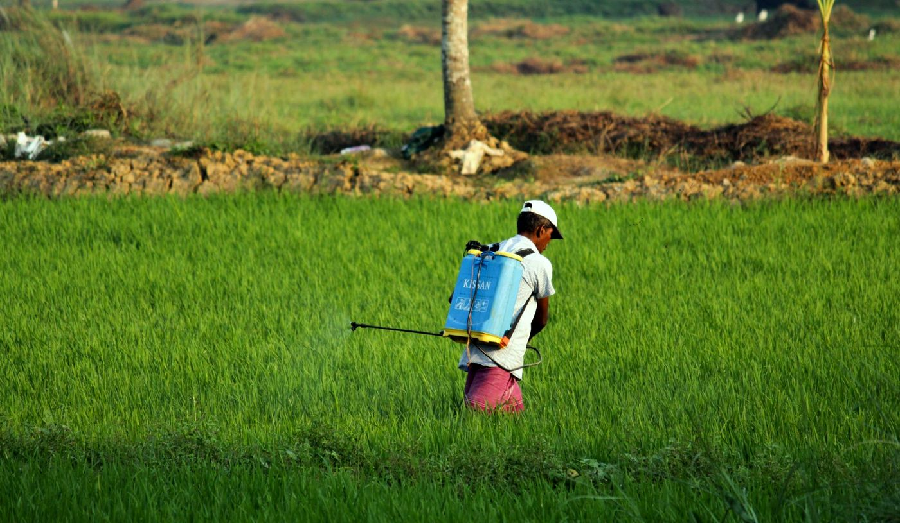
As a vital part of the rubber supply chain; dealers, sub-dealers, manufacturers and processors serve as crucial connection points between farmers and end-users. Although many dealers and sub-dealers may also be rubber farmers, they must undergo a separate risk assessment process in their capacity as a dealer or sub-dealer.
Approved sub-dealers are assigned to the farmers under their management to ensure structured oversight and traceability.
Sub-dealers are also connected to the next level of dealers, whether they are main dealers or other sub-dealers, to streamline the supply chain.
Sub-dealers receive comprehensive training on using the IntelliTrack application, which is essential for recording, tracking, collecting, batching, and invoicing rubber consignments.
They are subject to an annual compliance review by the Rubber Board of India under EUDR regulations, ensuring ongoing adherence to standards.
Approved dealers/manufacturers/processors are listed on the portal, making them visible to end buyers and exporters for selection, which facilitates market transactions.
All sub-dealers and farmers associated with a dealer/manufacturer/processor are automatically mapped under them, enhancing the management and traceability within the supply chain.
Dealers/manufacturers/processors are provided with full training on the IntelliTrack app to proficiently handle collection, batching, and invoicing of rubber consignments.
Dealers/manufacturers/processors undergo an annual review by the Rubber Board under EUDR compliance to ensure continuous adherence to regulatory standards.
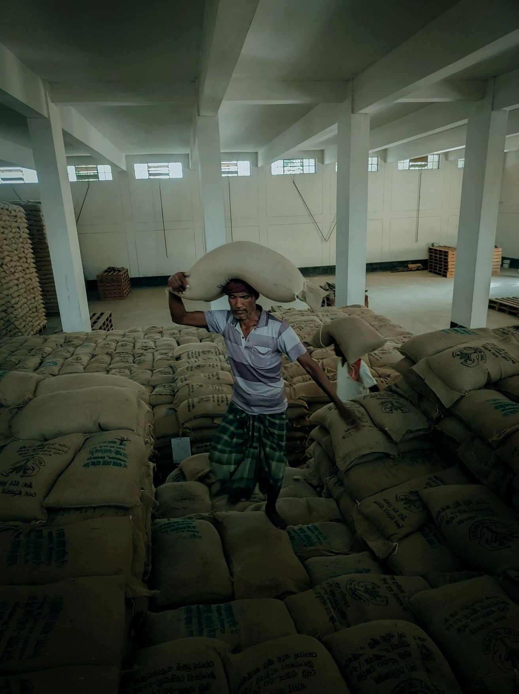
Yes, it is mandatory to conduct Risk Assessment as per EUDR Article 10 which states that “Exporters must collect comprehensive information about the products, including their origin, the legality of production, and any risks associated with deforestation.”
Farmers need to answer a few questions and provide information to ensure that Rubber has been produced in accordance with the relevant legislation of the country of production (India). This data is used to assess their compliance with EUDR regulations.
Farmers must complete an initial risk assessment, followed by annual reviews to ensure ongoing compliance with EUDR standards and local regulations.
Farmers receive support in the form of Risk Mitigation Plan and full assistance to reduce the risk, abide by the mitigation plan and comply with EUDR requirements.
The risk assessment aims to ensure that dealers and sub-dealers comply with both EUDR and local Bharat regulations. It focuses on legal compliance, material segregation, policy documentation, and providing necessary training. This process helps maintain the integrity and transparency of the rubber supply chain from farmers to end-users.
The risk assessment process for dealers and sub-dealers includes a self-assessment survey and a requirement to upload specific policy documents on a centralized portal. The survey evaluates compliance with EUDR standards, while the uploaded documents, such as SOPs and segregation policies, are reviewed to verify adherence to these standards. This dual approach ensures comprehensive compliance assessment.
The risk assessment process includes an initial evaluation and subsequent annual reviews. These reviews ensure ongoing compliance with the EUDR standards and local regulations, helping address any changes or updates in compliance requirements.
Upon successful completion of the risk assessment, dealers and sub-dealers receive approval. Approved sub-dealers are mapped to farmers and dealers, and both dealers and sub-dealers receive training on the IntelliTrack application for managing rubber consignments. This status is subject to an annual review to maintain compliance.
Support includes guidance materials on drafting compliant policies, workshops, and training to help understand and implement the necessary compliance measures. This assistance is designed to help dealers and sub-dealers not only pass the risk assessment but also maintain their compliance status effectively.
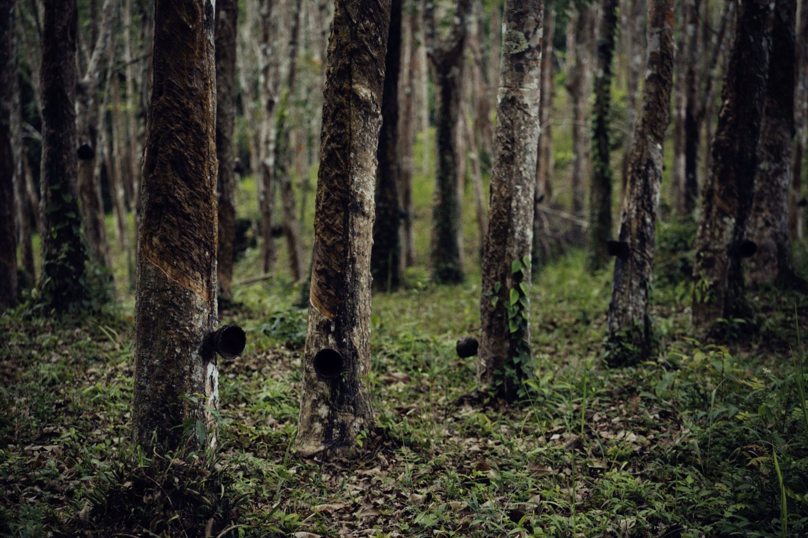
EUDR Article 10Register on BSNR as a farmer, dealer or sub-dealer to complete your risk assessment.
How rubber is traced from the farm to the EU buyer, what each stakeholder must do, and the Due Diligence exporters exercise under EUDR.
The first step is registration of all supply chain participants (farmers optional) on the Rubber Board EUDR portal. This creates a centralized database with essential information, laying the foundation for a transparent and traceable process.
Trained field executives visit farmers to onboard them, conduct polygon mapping, and complete KYC verification. This process collects detailed information, including the farmers’ geographic boundaries and all necessary documents for EUDR compliance.
After registration, participants are mapped, and their rubber transactions are recorded through the use of IntelliTrack app. Training will be provided on using the IntelliTrack app to document the movement of rubber goods throughout the supply chain.
Dealers, sub-dealers, processors, and manufacturers are trained on segregation and storage policies essential for EUDR compliance. Proper practices are crucial to maintaining supply chain integrity and traceability.
Finally, exporters can generate a traceability certificate through the Rubber Board platform, detailing the rubber’s origin, polygon sets, and a Due Diligence Statement, ensuring full EUDR compliance.
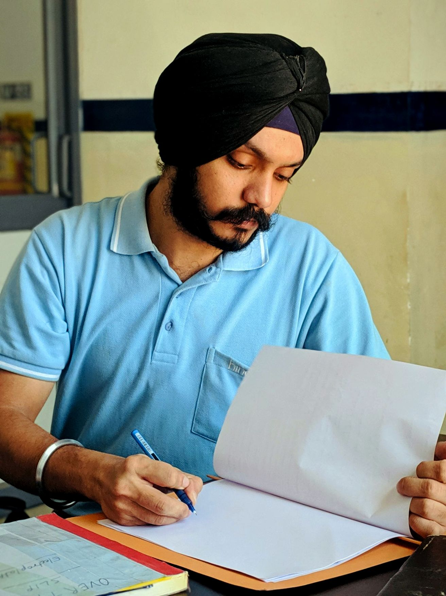
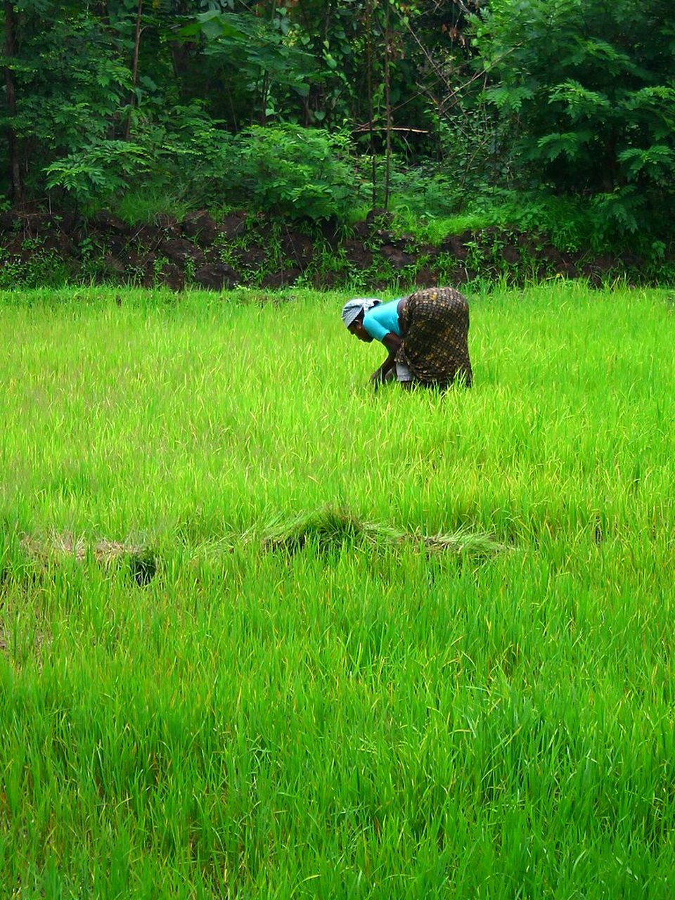
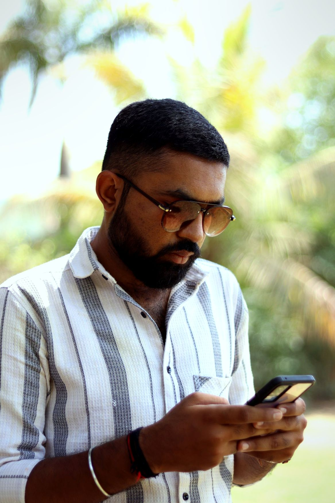
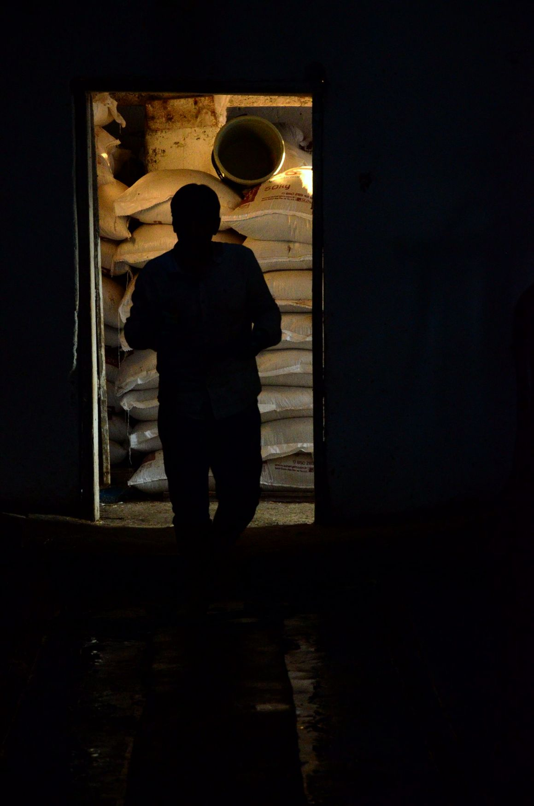
Ensuring traceability in the rubber supply chain requires active participation from all stakeholders, including dealers, sub-dealers, processors, and exporters. Each group plays a unique role in maintaining a transparent, verifiable supply chain.
Register and provide necessary documents, including KYC details.
Complete training on the IntelliTrack mobile app for recording transactions.
Implement segregation and storage policies to keep EUDR-compliant rubber separate.
Register your facility and submit all required documents.
Undergo training on the IntelliTrack application for tracking rubber flow.
Implement practices to avoid mixing EUDR and non-EUDR materials, with separate storage.
Register on the Rubber Board EUDR Portal.
Learn to use the IntelliTrack app for tracking consignments.
Implement segregation to avoid mixing EUDR and non-EUDR rubber, with proper storage.
As per EUDR [Article 8], prior to exporting Rubber to the EU market, exporters are mandated to exercise Due Diligence. For exercising Due Diligence (DD), three fundamental elements to be implemented which together form the continuous process of DD.
Exporters registered on the Rubber Board Portal will receive all the necessary information required by the EU, the system will facilitate risk assessment and provide relevant risk mitigation measures as well. All the required information will be provided to the exporter in the form of a Due Diligence Statement (DDS). This DDS can be shared with EU buyers to ensure compliance with EUDR requirements.
Rubber Board Portal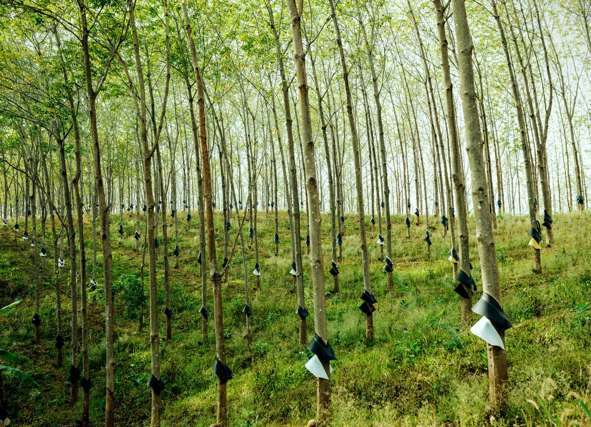
Exporters Rubber Board EUDR PortalRegister on the Rubber Board EUDR Portal to receive your Due Diligence Statement, Traceability Certificate and GeoJson files.